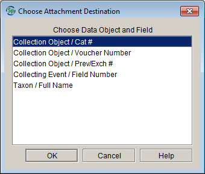
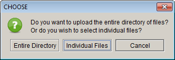
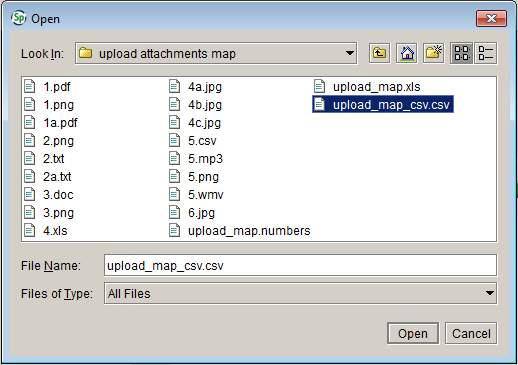
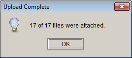
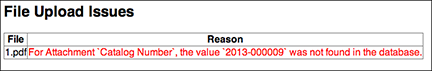

Attachment ToolsAttachment Tools
Attachment ToolsAttachment ToolsAttachment tools offer the
following functionality:
Open the Attachment Tools by clicking the Attachment button on
the task bar.
If Attachment Tools is not
available on the task bar add it by choosing Specify >
Preferences > Taskbar for Macintosh,
or Edit > Preferences > Taskbar for Windows and Linux,
then checking the Add Attachments checkbox.
Click Show All Attachments in the side bar to browse thumbnail representations of all attachments, in the current collection, within the workspace.
Note: the Attachment tools are limited to files in an 'Attachment' table, not files linked to records using a Linking Field display.
Note: thumbnails are created for jpg, png and most pdfs. Other file types are represented by a default thumbnail based on their file type.
Attachment Levels (multiple collections in the same database)
Attachments are stored at the same institutional level as their associated table and are displayed based on this level. For example, the Collecting Event table is at the Discipline Level and a pdf attached to a Collecting Event record will display for all collections within the discipline.
Attachment Table
Institution Level
Accession
Either Institution or Division (user choice)
Agent
Division
Borrow
Collection
Collection Event
Discipline
Collection Object
Collection
Conservation Description
Division
Conservation Event
Division
DNA Sequence
Collection
DNA Sequencing Run
Collection
Field Notebook
Discipline
Field Notebook Page
Discipline
Field Notebook Page Set
Discipline
Gift
Division
Loan
Divison Locality
Discipline
Permit
Institution
Perparation
Collection
Reference Work
Institution
Repository Agreement
Same scope as Accession
Taxon
Discipline
To Open an Attachment or Display a larger image:
- Double click an individual image thumbnail to display it larger in a new tab in the workspace.
- Double click a non-image file to open it in its native program (example: .exe opens the file in Excel).
Note: windows users must set their default media/video player to ??? for video files to open when double-clicked from within Specify.
Available Buttons
Button
Location
Action
next to thumbnail
Display information about the associated record, also allows record to be opened in form view.
next to thumbnail
Open associated record in form view.
bottom of workspace
Display associated record information, will display latitude and longitude information on a map.
bottom of workspace
*Display attachment metadata when available.
bottom of workspace
Opens help page for the Attachment tools.
|<
bottom of workspace Go to first record.
>|
bottom of workspace Go to last record.
<
bottom of workspace Go to previous record.
>
bottom of workspace Go to next record.
*Note: Some file types such as png, bmp and gif contain little or no metadata information.
*Note: Metadata captured at the time a digital photo is taken may include the date, and latitude/longitude. The metadata information may be stripped from the file when the image is loaded into an outside program such as a web-based image storage facility.
Export Attachment
Right-click on the thumbnail and click the Export Attachment button.
Click Show All Images in the side bar to browse thumbnail representations of jpg, tiff, bmp and gif image types, in the current collection, within the workspace.
The Show All Images tool includes the same functionality as Show All Attachments. Please see section 1 of this document for more information about using Show All Images.
Note: the Attachment tools are limited to files in an 'Attachment' table, not files linked to records using a Linking Field display.
Note: Specify is unable to create and display thumbnail images of tiff files at this time, but tiff images can still be attached and viewed in Specify.
The Import Attachments function allows multiple attachments to be associated to records by simply renaming attachments within a directory to match a unique field within an existing record. For example, if records within the Collection Object table include unique values for field number, simply rename attachment files to match the field numbers in existing records.
Table
Unique Field Value
File Name Example
Collection Object
Record Number (YYYY-#####)
2012-00001.jpg
Collection Object
Field Number (NNNNN)
00034.pdf
Collection Object
Alternate Catalog Number (#####)
00001.exe
Collecting Event/Collector Number
Collector Number (XXXXXX)
00012a.doc
Taxon
Full Name (Genus Species)
Tursiops truncatus.png Example: the associated image attachment for record number 3333 would be saved as file name 3333.jpg.
When the unique field uses a format with Multiple attachments can be associated to the same unique identifier by adding a digit to the file name.
Unique Field Value
Multiple Attachment File Name
Numeric only (example:2000)
2000x or 2000_x
Alphanumeric (example:2000A; KU-0002000)
2000A_x; KU-0002000_x
Click Import Attachments located on the Attachment side bar.
Choose which unique table/field will be used to attach the files.
Choose whether you wish to import an individual file or entire directory.

Choose the directory/file to import.
Specify will display a message once the upload is complete.

If any files were not able to upload Specify will display additional information in a web browser window.
The Import Image Mapping File allows multiple files to be attached to records in Specify by associating the files with unique field values within specific tables:
Table
Unique Field Value
Collection Object
Record Number
Collection Object
Field Number
Collection Object
Alternate Catalog Number
Collecting Event/Collector Number
Collector Number
Taxon
Full Name
An Import Image Mapping is used to create the association. The file must first be created in a spreadsheet program, then saved as either a tab delimited or csv file.
The spreadsheet/mapping file must contain 2 columns, the first column containing the unique field value within a record and the second containing the name of the attachment file. The unique field value and file names must match existing values and names exactly and the mapping file must be located in the same directory as the attachment files.
Note: more than one attachment can be associated with the same unique identifier.
Note: attachment files are not required to be named using the unique identifier.
Unique Field Value
Attachment File
2000A
tuna_right_side.jpg
2000A
tuna_left_side.jpg
2000B
notes.doc
2000C
2000C.jpg
Click Import Attachment Mapping File located on the Attachment side bar.
Choose the unique table/field used to attach the files.
Choose the attachment mapping file in the file directory.
Specify will display a message once the upload is complete.
If any files were not able to upload Specify will display additional information in a web browser window.
